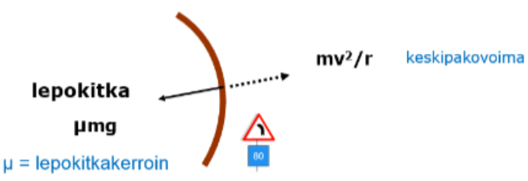
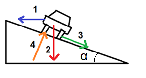
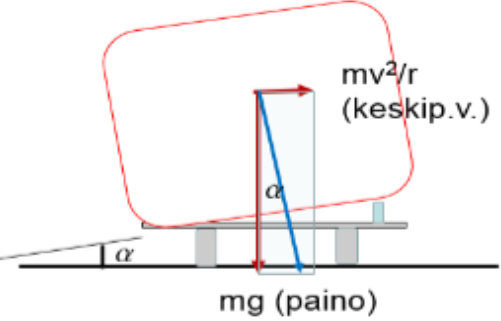

Sovelluksia
Contents
Sovelluksia¶
Ympyräliikkeeseen liittyviä fysiikan lakeja voidaan käyttää esimerkiksi, kun tarkastellaan satelliittien liikettä maapallon ympärillä. Tällaisiin sovelluksiin perehdytään enemmän geofysiikan opintojaksolla. Tutustutaan tässä siihen, miten ympyräliikkeen kaavoja voi huomioida kaarteissa liikkuessa.
Kallistamaton kaarre¶

Auto pysyy kaarteessa tiellä renkaiden ja tien välisen kitkan ansiosta. Tilannetta voidaan tarkastella liikkuvassa koordinaatistossa keskipakovoiman avulla. Koska auto ei luisu sivusuunnassa, renkaiden ja tien välillä vaikuttaa lepokitka. Auto ei luisu pois tieltä, jos
\(μmg \geq \frac{mv^2}{r}\) eli \(μg \geq \frac{v^2}{r}\).
Esim. Laske auton maksiminopeus kaarteessa, jonka kaarevuussäde on 140 m, jos lepokitkakerroin on 0.25.
Ratkaisu
Yhtälöstä \(μg \geq \frac{v^2}{r}\) saadaan \(v \leq \sqrt{\mu g r} = \sqrt{0.25\cdot 9.81~\frac{\text{m}}{\text{s}^2}\cdot 140~\text{m}} = 18.5~\frac{\text{m}}{\text{s}} \approx 66~\frac{\text{km}}{\text{h}}\).
Kallistettu kaarre¶
Kitkallisessa kaarteessa, jonka kallistuskulma on \(\alpha > 0\), autolla voidaan (teoriassa) ajaa nopeammin kuin kallistamattomassa.

Autoon vaikuttavat kaarteessa seuraavat voimat:
(1) keskipakovoima \(\frac{mv^2}{r}\),
(2) painovoima \(mg\),
(3) kitkavoima \(\mu N\),
(4) pinnan tukivoima \(N\).
Jokainen voima voidaan trigonometrian avulla jakaa vaaka- ja pystysuoraan komponenttiin. Auto pysyy tiellä, jos voimien summa sekä vaaka- että pystysuunnassa on nolla. Tuloksena saadaan maksiminopeus:
\(v_{\text{max}}=\sqrt{ \frac{gr(\sin{\alpha}+\mu \cos{\alpha})}{\cos{\alpha}-\mu \sin{\alpha} }}\)
ja miniminopeus:
\(v_{\text{min}}=\sqrt{ \frac{gr(\sin{\alpha}+\mu \cos{\alpha})}{\cos{\alpha}+\mu \sin{\alpha} }}\)
Esim. Laske auton maksiminopeus kaarteessa, jonka kaarevuussäde on 140 m ja kallistuskulma 8.0 astetta. Renkaan ja tien välinen lepokitkakerroin on 0.25.
Ratkaisu
\(v_{\text{max}}=\sqrt{\frac{9.81~\frac{\text{m}}{\text{s}^2} \cdot 140~\text{m}(\sin{8^{\circ}}+0.25 \cos{8^{\circ}})}{\cos{8^{\circ}}-0.25 \sin{8^{\circ}}}} \approx 23.6~\frac{\text{m}}{\text{s}} \approx 84.8~\frac{\text{km}}{\text{h}}\)
Periaatteessa täysin kitkattomastakin kallistetusta kaarteesta voidaan selvitä. Sijoitetaan maksimi- ja miniminopeuden yhtälöihin kitkakerroin \(\mu=0\). Tällöin
\(v_{\text{max}}=\sqrt{ \frac{gr\sin{\alpha}}{\cos{\alpha}}}\) ja \(v_{\text{min}}=\sqrt{\frac{gr \sin{\alpha}}{\cos{\alpha}}}\).
Siis maksiminopeus ja miniminopeus ovat samat! Lisäksi kumpaankin kaavaa voidaan vielä sieventää:
\(v_{\text{max,min}}=\sqrt{gr \tan{\alpha}}\).
Esimerkiksi kaarteessa, jonka kaarevuussäde on 50 metriä ja kallistuskulma on 8 astetta, voitaisiin kitkattomissa olosuhteissa ajaa nopeudella
\(v_{\text{max,min}}=\sqrt{9.81~\frac{\text{m}}{\text{s}^2} \cdot 50~\text{m} \cdot \tan{8^{\circ}}} = 8.30~\frac{\text{m}}{\text{s}} \approx 30~\frac{\text{km}}{\text{h}}\).
HUOM. Todellisuudessa auto ei käyttäydy näin yksinkertaisesti, vaan malli on tarkoitettu pistemäisille kappaleille. Aja hitaammin!
Perustelu
Jaetaan voimat trigonometrian avulla vaaka- ja pystysuoriin osiin:
(1) keskipakovoima \(\frac{mv^2}{r}\) on jo valmiiksi vaakasuuntainen
(2) painovoima \(mg\) on jo valmiiksi pystysuuntainen
(3) kitkavoiman \(\mu N\) vaakasuora osuus on \(\mu N \cos{\alpha}\) ja pystysuora osuus on \(\mu N \sin{\alpha}\)
(4) pinnan tukivoiman \(N\) vaakasuora osuus on \(N \sin{\alpha}\) ja pystysuora osuus on \(N \cos{\alpha}\)
Auto pysyy tiellä, jos ympyrältä poispäin osoittavien voimien summa on yhtä suuri kuin ympyrän keskipisteeseen osoittavien voimien summa. Kirjoitetaan ehtoa kuvaavat yhtälöt erikseen vaaka- ja pystysuunnassa ja ratkaistaan yhtälöparista nopeus.
Vaakasuunnassa: \(N \sin{\alpha} + \mu N \cos{\alpha}=\frac{mv^2}{r}\) eli \(N (\sin{\alpha} + \mu \cos{\alpha})=\frac{mv^2}{r}\) (yhtälö 1)
Pystysuunnassa: \(N \cos{\alpha} = \mu N \sin{\alpha} + mg\) eli \(N (\cos{\alpha}-\mu \sin{\alpha}=mg\)
Ratkaistaan pystysuunnan yhtälöstä \(N=\frac{mg}{\cos{\alpha}-\mu \sin{\alpha}}\) (yhtälö 2)
Sijoitetaan yhtälö 2 yhtälöön 1:
\(\frac{mg}{\cos{\alpha}-\mu \sin{\alpha}} (\sin{\alpha} +\mu \cos{\alpha})=\frac{mv^2}{r}\)
Jaetaan molemmilta puolilta pois auton massa:
\(\frac{g}{\cos{\alpha}-\mu \sin{\alpha}} (\sin{\alpha} +\mu \cos{\alpha})=\frac{v^2}{r}\)
Kerrotaan molemmat puolet kaarevuussäteellä ja vaihdetaan puolet:
\(v^2=\frac{gr}{\cos{\alpha}-\mu \sin{\alpha}}(\sin{\alpha} +\mu \cos{\alpha})\)
Sieventämällä saadaan maksiminopeus:
\(v_{\text{max}}=\sqrt{ \frac{gr(\sin{\alpha}+\mu \cos{\alpha})}{\cos{\alpha}-\mu \sin{\alpha} }}\)
Laskennallinen miniminopeus (ettei auto lähde valumaan sisäkaarteeseen) saadaan johdettua vastaavalla tavalla, mutta siten, että kitkavoiman ajatellaan suuntautuvan poispäin ympyrältä.
Optimaalinen kallistus¶
Supernopeille junille käytetään ns. optimaalista kallistusta. Tällöin raide on kohtisuorassa painovoiman ja keskipakovoiman vektorisummaa vastaan. Matkustusmukavuus paranee, esim. juomat eivät läiky!

Kallistuskulma on optimaalinen silloin, kun \(\tan{\alpha}=\frac{v^2}{rg}\)
Esim. Luotijunan nopeus on 270 km/h (=75 m/s) kaarteessa, jonka kaarevuussäde on 1500 m. Laske optimaalinen kallistuskulma.
Ratkaisu
\(\tan{\alpha}=\frac{(75~\frac{\text{m}}{\text{s}})^2}{1500~\text{m}\cdot 9.81~\frac{\text{m}}{\text{s}^2}} \approx 0.38\), josta \(\alpha = 21^{\circ}\).